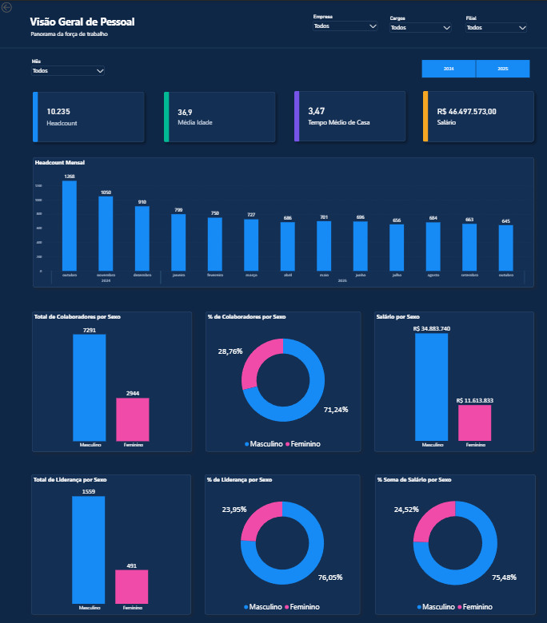
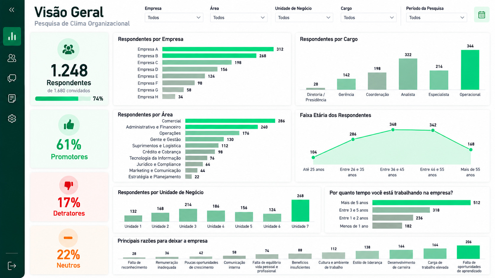
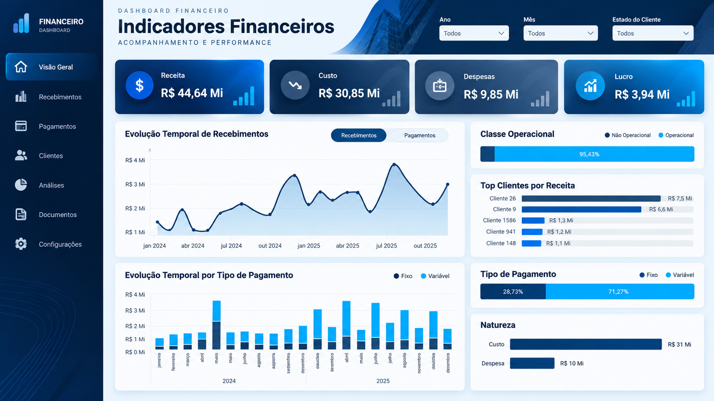
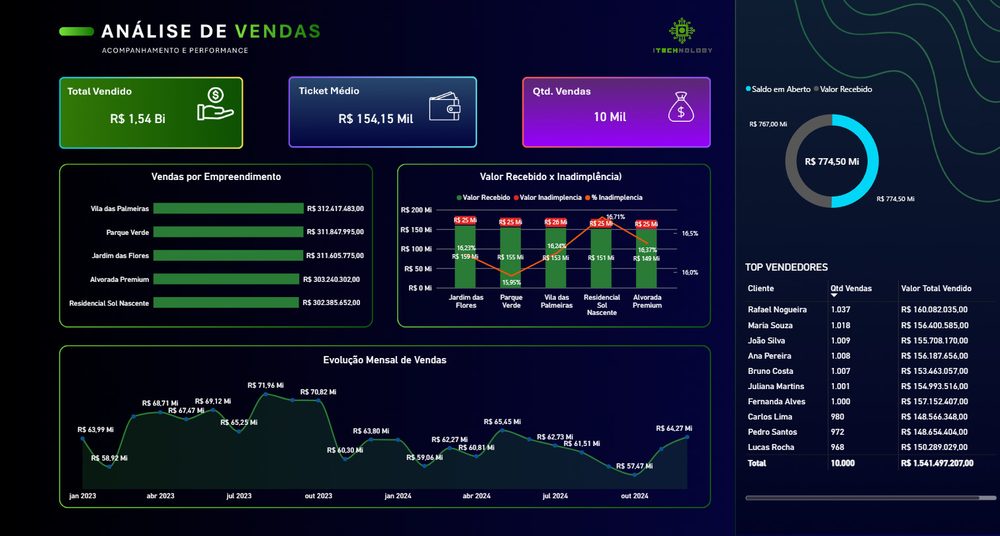
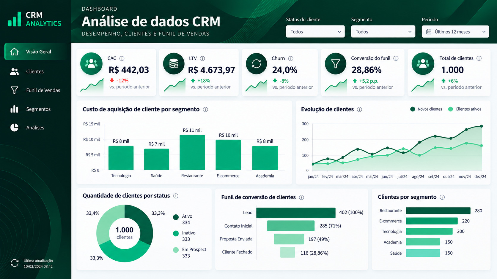
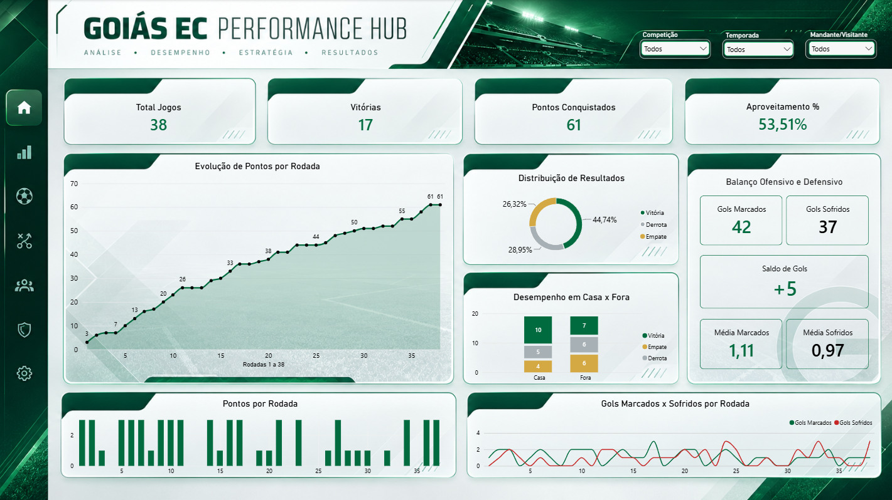
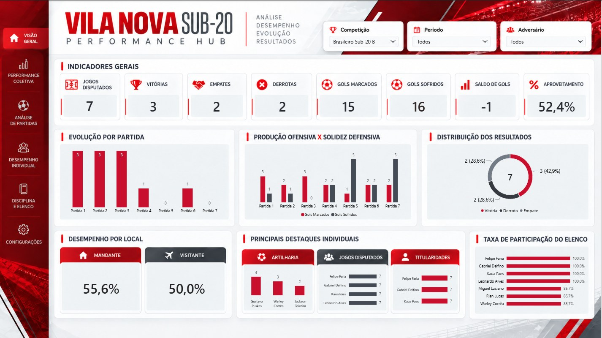

PEOPLE ANALYTICS · POWER BI
Gestão Estratégica de RH
Visão integrada de headcount, massa salarial,
diversidade e treinamentos. O painel organiza
indicadores de pessoas para comparar perfis
e acompanhar a evolução da estrutura de RH.
Power BI · People Analytics

PEOPLE ANALYTICS · POWER BI
Pesquisa de Clima Organizacional
Leitura de participação, e-NPS e percepção
dos colaboradores. As visões ajudam a comparar
ciclos e dimensões da pesquisa e a identificar
temas prioritários para ações de RH.
Power BI · People Analytics

FINANCIAL ANALYTICS · POWER BI
Indicadores Financeiros
Análise de receita, custos, despesas e lucro
em um único painel. A composição dos resultados
facilita o acompanhamento da rentabilidade
e a identificação de variações relevantes.
Power BI · Financial Analytics

SALES ANALYTICS · POWER BI
Performance Comercial
Acompanhamento de faturamento, quantidade de
vendas e ticket médio. A combinação dos KPIs
permite distinguir mudanças de volume e de
valor médio nas operações comerciais.
Power BI · Sales Analytics

CRM ANALYTICS · LOOKER STUDIO
Clientes e Funil de Vendas
Indicadores de aquisição e relacionamento
com clientes, como CAC, LTV, churn e conversão,
reunidos em uma visão para avaliar o funil
e a retenção.
Looker Studio · CRM Analytics

SPORTS ANALYTICS · PYTHON & POWER BI
Goiás EC Performance Hub
Projeto de ponta a ponta com Python, Power BI
e DAX: coleta e tratamento de dados das
38 partidas do Goiás na Série B 2025 e
cinco páginas de análise esportiva.
Python · Power BI · Power Query · DAX

SPORTS ANALYTICS · PYTHON & POWER BI
Vila Nova Sub-20 Performance Hub
Análise de sete partidas do Brasileiro Sub-20 B
de 2026 com dados oficiais da CBF, extraídos
e tratados em Python e apresentados em cinco
páginas de Power BI.
Python · Power BI · Power Query · DAX

HEALTH DATA ANALYTICS · PYTHON & POWER BI
NeuroInsights | Clinical & Cognitive Intelligence
Análise exploratória de desempenho cognitivo
com dados públicos do NHANES (2011–2014).
Projeto de ponta a ponta com Python,
validação de dados, modelagem dimensional
e três páginas interativas no Power BI.
Python · Pandas · Power BI · DAX